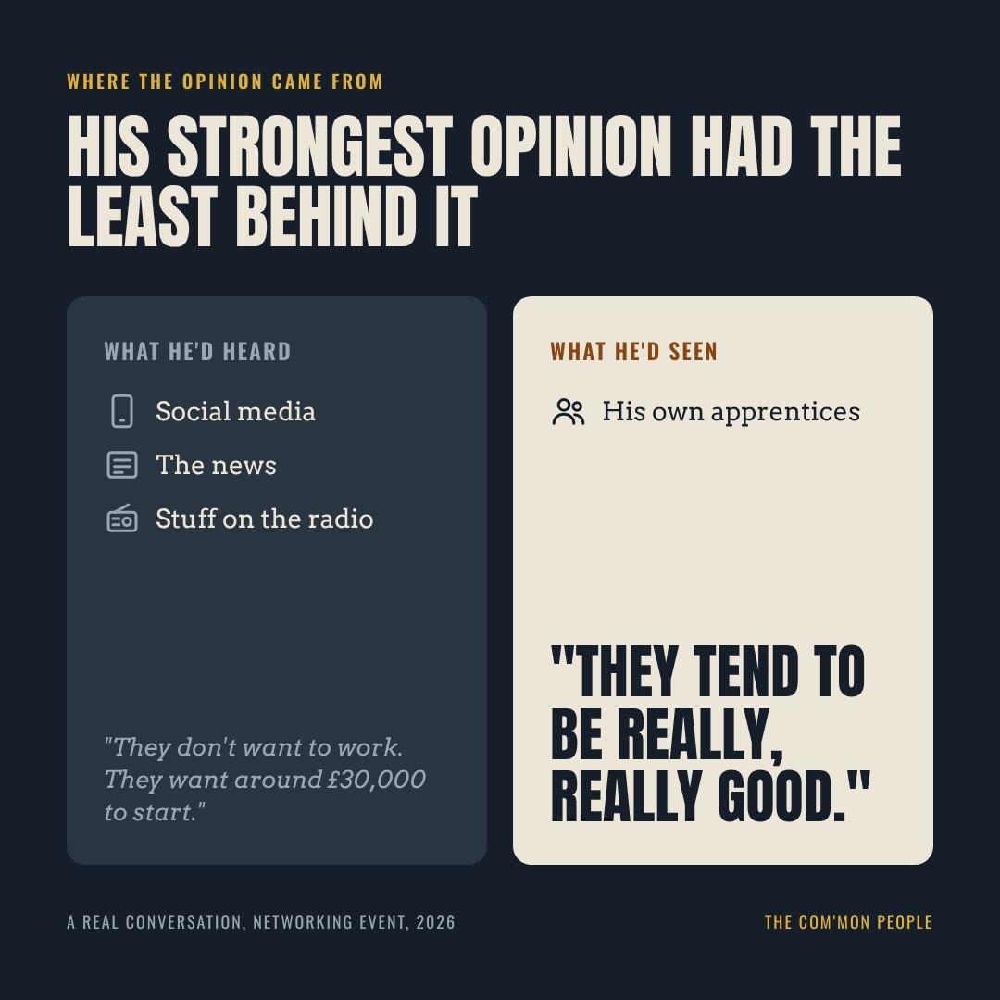

Why so many small businesses talk themselves out of taking on young people, and what happens when you ask one simple question. We’ve all heard what people say about young people and work. What surprised me wasn’t hearing it again. It was what happened when I stopped arguing and asked: where does that come from?
My job is helping employers look at apprenticeships and training. Recently, at a networking event, I got talking to two people I sort of know from these events: a payroll specialist and a business development manager from Metro Bank.
They asked what I do. I started to explain the things that put employers off, and before I could name one, the bank manager named it for me. Young people, he said. Gen Z. They don’t want to work. They want around £30,000 to start, with no experience. They can’t hold a conversation. They turn up late and go home early.
You’ll have heard it all before. A few years ago I’d have gone straight back at him. This time I just asked: “Where does that opinion come from?”
He had a think. Social media, mostly. The news. Stuff on the radio.
So I asked if any of it came from his own experience. This is the bit that stuck with me. His business does take on apprentices. And, in his words, they tend to be really, really good.

That’s what has happened with Gen Z.
First, who are we talking about? Pew Research Center in the US, whose definition is the one most people use, counts anyone born from 1997 onwards as Gen Z and hasn’t fixed an end date [1]. So in 2026 the oldest are around 29. Others draw the line in different places. Deloitte’s 2025 survey, for example, counts Gen Z as born between 1995 and 2006 [2]. Even the label is a bit loose.
The research doesn’t back the stereotype. Professor Bobby Duffy, who runs the Policy Institute at King’s College London, has spent years studying the differences between generations. He writes that Gen Z and millennials are not lazy at work or disloyal to their employers, and that claiming they are creates false expectations and divides [3].
He also points out that a lot of what gets blamed on “a generation” is really about age. He calls these “lifecycle effects”: things that come from the stage of life you’re at, not the year you were born. Every generation of 20-year-olds has had less experience than the people managing them. That isn’t new.
Ipsos found something similar. Looking at more than 3.5 million employee survey responses, it found that how people feel about work follows their life and career stage, not their generation [4].
None of this means every young person is brilliant. Some will be late. Some won’t be great with customers. The same goes for some 45-year-olds. The point is that the label tells you very little about the actual person in front of you.
I used to meet this head on. “Well, who’s going to do the work if you don’t train anyone?” Looking back, I probably came across too strong.
Asking where the belief came from worked differently. It let him look at his own evidence and spot the gap himself. I wasn’t trying to win. I was trying to get him thinking.
These are the questions I now take into those conversations:
The same works for the other things employers tell me: “apprenticeships cost too much”, “we haven’t got time to train anyone”, “they’ll leave as soon as they qualify”, “we’re better off hiring someone with experience”. Each one deserves a question, not a lecture. Some turn out to be fair. Some turn out to be out of date. Here’s what the evidence says.
The bank manager’s view came from his news feed. His evidence came from his own apprentices. When those two disagree, I’d trust the second.
The biggest UK study of what employers actually experience is the Department for Education’s Apprenticeship Evaluation employer survey. The 2021 survey, published in 2022, interviewed 4,085 employers in England who had apprentices [5].
These aren’t big corporates. More than half (58%) of the workplaces with current apprentices were part of organisations with fewer than 50 staff.
Two things to be fair about. These are employers who already chose apprenticeships, so they’re not a random sample of all businesses. And the figures are what employers told researchers, not a measured return on investment. It’s still a lot more reliable than something you heard on the radio.
What about young people themselves? Deloitte’s 2025 global survey of more than 23,000 Gen Z and millennials in 44 countries found learning and development was one of the top three reasons Gen Z chose their current employer. Half of Gen Z (50%) want their manager to teach and mentor them, but only 36% say it actually happens [2].
Apprenticeships aren’t free and they’re not right for every job. But some of the most common worries are based on old information, or leave half the costs out.
“They want £30k on day one.”
The legal minimum for an apprentice is £8.00 an hour from April 2026. That applies to apprentices under 19, and to older apprentices in their first year. At 37.5 hours a week, that’s about £15,600 a year. Plenty of employers pay more, but the starting point is nowhere near £30k.Source [6] · £15,600 is our calculation
“It’ll cost too much.”
In England, training costs are covered in full for new apprentices under 25, and there’s no employer National Insurance to pay on apprentices under 25. From 1 October 2026, employers who don’t pay the levy can also get £2,000 for taking on a new apprentice aged 16 to 24, paid in two parts. There’s also a £1,000 payment for apprentices aged 16 to 18.Source [7]
“They’ll leave as soon as they qualify.”
73% of employers kept at least one of their apprentices after they finished, and 62% kept all of them. Where apprentices did leave, the main reasons employers gave were moving to a different sector (20%), better career prospects (19%) and better pay (16%).Source [5]
“We’re better off hiring experience.”
Experienced people still take time to settle in. A 2014 Oxford Economics study found someone joining from the same sector took 15 weeks on average to get fully up to speed, or 12 weeks in firms of 1 to 9 staff. Firms with under 50 staff spent around £3,300 per hire on recruitment costs. The study only covered five professional sectors and staff on £25,000 or more, so treat it as a rough guide.Source [8]
Look again at why apprentices leave. Career prospects and pay are near the top. Those are things an employer has some control over. So when someone says “they just leave”, it’s worth asking: what were they leaving, and where were they going?
I’ve often said an apprentice can start pulling their weight within about six months. I went looking for proof, and I want to be straight about what I found. I couldn’t find a UK study that gives a single figure for apprentices. The closest is that 2014 Oxford Economics study. It found people coming straight from education or unemployment can take six months or more to get fully up to speed, with new graduates averaging 40 weeks [8]. But that’s for professional jobs paying £25,000 or more, not entry-level apprenticeships, and “fully up to speed” isn’t the same as starting to help. So the honest version is this: many apprentices will be useful well before they’re fully trained, but how quickly depends on the job and the support they get. I’d rather say that than oversell it.
Time is the cost the funding doesn’t cover. Someone has to train, supervise and support an apprentice, and in a 50-person business that time comes out of somebody’s week. In the DfE survey, the smallest employers were the most likely to be unhappy: 10% of those with fewer than 10 staff were dissatisfied, against 7% overall [5]. That’s a reason to plan properly, not a reason to walk away.
A different conversation, with the COO of Brocket Hall, showed me what the other side looks like.
She sees the skills gap in hospitality as a long-term problem. Her answer is to build a pipeline of talent inside the business: clear career paths for people who join at junior level, making them feel valued and like they belong, and giving them a future they can see. Just as important, the plan has to actually happen, not just sit on paper.
The hospitality numbers are more mixed than the headlines suggest, and it’s worth being honest about that.
So the pressure right now has eased [9][10]. But fewer vacancies today doesn’t answer the longer-term question: where will tomorrow’s supervisors and managers come from? And hospitality makes very little use of apprenticeships compared with other sectors [5].
And the young people are out there. The ONS estimates 981,000 people aged 16 to 24 were not in education, employment or training between April and June 2026, 13.0% of that age group. More than half of them (588,000) weren’t looking for work or weren’t able to start [11]. Not all of them are ready for a job, and some face real barriers. But it’s a lot of young people who aren’t getting a start.
For hospitality employers, the government’s new Foundation Apprenticeships include catering and hospitality. They’re Level 2, last at least eight months, are fully funded, and come with a £2,000 incentive for employers taking on 16 to 21 year olds [7]. The way in is there. The question is whether there’s a career path behind it.
An apprentice needs more than someone to train them and a list of jobs. I believe the ones that work best have someone in the business they can talk to: someone more senior who makes time for them, listens, asks how things are going, and helps them see how they’re fitting in and what to work on next.
When that person is a senior manager, it sends a message. Someone important has chosen to spend time on them. That means a lot to anyone, especially someone just starting out.
The evidence suggests this is where a lot of employers fall short:
Half of Gen Z want their manager to teach and mentor them; only 36% say it happens [2].
Under-25s report the highest loneliness and the lowest sense of belonging at work [4].
Almost a quarter (24%) of employers whose apprentices had finished said they gave no training sessions of their own, beyond day-to-day work [5].
Put those together and you can see how some of what gets blamed on young people might have more to do with how they’re treated at work. I’d expect anyone who feels lonely, bored and unsupported to be more likely to switch off or leave, whatever their age.
There’s a bonus too. The person mentoring an apprentice gets to practise coaching, listening and giving feedback, which are the same skills good managers need. I believe that when that person gets the time and support to do it properly, they become more engaged too. I haven’t found UK research that measures this for small businesses, so it’s my view rather than a statistic. But it’s worth asking who in your business would benefit from learning to develop someone else.
Back at that networking event, we got onto skills gaps. We talked about sectors like pharmaceuticals, where the number of people leaving doesn’t seem to be matched by young people coming in at entry level. Sooner or later, that gap lands on someone’s desk.
So I asked: who’s responsible for filling it?
His answer: businesses. Owners and managers.
He’s right. And it leads to the question I’d put to every small business owner reading this: if you don’t develop your own future staff, where are they going to come from?
You can try to hire them in ready-made, but you’ll be up against everyone else trying to do the same, and even experienced people take weeks to get up to speed. Or you can grow some of your own, on purpose, with a proper way in, a real career path and someone who makes time to listen.
Apprenticeships aren’t the only answer. They won’t suit every job or every business, and they only work when the support is real. But for under-25s the training is fully funded, and the loyalty you build is your own.
Catch the stereotype. Next time you hear yourself, or someone in your team, say something about “young people these days”, stop and ask: where does that come from? Is it your experience, or your news feed? What would change your mind?
Find your mentor. Who in your business could mentor someone well?
Draw the path. What would a career path from your most junior job actually look like?
Ask what they were leaving. When people have left you before, what were they really leaving?
Opinions in this piece are marked as the author’s own. Apprenticeship funding rules apply to England and change often, so check the current GOV.UK guidance before acting on any figure here.
Built by the same people who write these dispatches. Company research, a tailored pitch, sharp questions, or a CV rewritten to the exact role. Most of the way there in minutes. Free every time, for everyone.